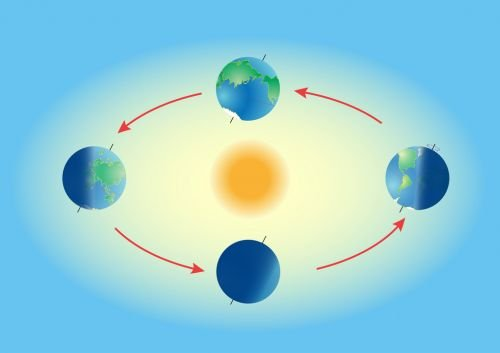

Traslación de la Tierra
- La traslación es el movimiento de la Tierra a lo largo de su órbita elíptica alrededor del Sol.
- La Tierra tarda aproximadamente 365.25 días en completar una traslación alrededor del Sol, lo que da lugar a un año en el calendario.
- La inclinación del eje de la Tierra durante su traslación es responsable de las estaciones del año. Cuando una región está inclinada hacia el Sol, experimenta el verano; cuando está inclinada lejos del Sol, experimenta el invierno.
Movimiento de translación de la Tierra
